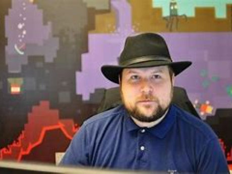
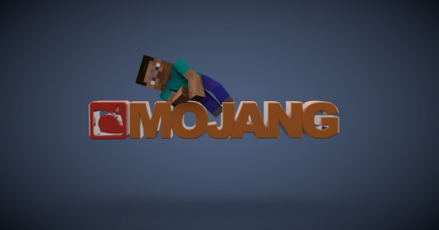
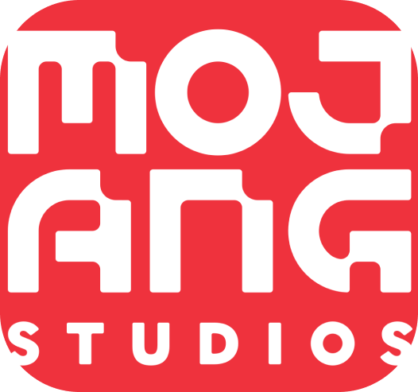

Minecraft ir būvniecības datorspēle, kuru izveidojis Markuss Persons un tā dibinātā kompānija Mojang AB.
2014. gada septembrī Minecraft un tās izstrādātāju Mojang AB iegādājās informācijas tehnoloģiju milzis Microsoft
Minecraft atklājējs ir Markus Persons, bet spēlētāji viņu zin pēc viņa tēla vārda Notch.

Markus ir dzimis 1979 gadā Zviedrijā. Markuss jau deviņu gadu vecumā, kad pārbrauca uz Stokholmu
atrada sev jaunu hobbiju -programēšana- un drīz vien jau saprata par ko grib strādāt nākotnē, par
video spēļu veidotāju.
Ar laiku viņa hobijs atveda viņu video spēļu industrijā viņš iestājās strādāt
kompānijā ar nosaukumu King kur ārpus daba viņam tika iedotā brīvība ārpus darba ar ierobežojumu, ka
viņš nedrīks taisīt lielus patstāvīgus konkurētspējīgus projektus.
Markus to bija izmantojis un katru gadu
piedalijās indī konkursos eksperimentējot kā tikai viņš vēlās.
Markusam jau 2009 gadā, gadu pirms iešanas prom no King, radās ideja par to lai izveidotu spēli,
ko tagad mēs zinam pēc nosaukuma minecraft. Sākotnēji viņam bija tikai blogs kurā viņš dalijās
ar bildēm no spēles, bet pēctam 2009 gada 13 jūnijā viņa iekrājumi sāka iet uz beigām un viņš neilgi
domājot izlēmauztaisīt premium akuntu sistēmu savējā blogā pateicoties kurai cilvēki varēja paši
pieskarties spēlei. Jau par pirmo mēnesi tika nopirkti vairāk nekā 1 000 akaunti un sekojošie akaunti
pārsniedza 20 000. Drīz vien pēc gada spēle jau sāka atgādināt ne izklaidi uz vakaru, bet nopietnu
nodarbību uz vairākām dienām un cilvēki sāka labāk pirkt spēli tajā pašā laikā sapratot, ka spēle
jau sāk nest stabilu peļņu Markus izlēma atklāt personīgu kompāniju drīz vien sazinoties ar labu
dragu no darba Džejkabu Porseru viņš piedāvāja dibināt kompāniju tā viņi dibināja kompāniju Mojang AB.

Nākotnē tad kad minectaft izgāja 1 oficiālā versija Markus pateica, ka vair nevēlas strādāt pie šī projekta
un pameta to, bet spēlētāji to nepieņema un turpināja rakstīt viņam par kļūdām spēlē un kādu dienu 2014
gadā viņš savējā twiterī piedāvāja lielkompānijām nopirk viņa kompāniju. Tādā veidā veselu nedēļu
dažādu kompāniju pārstāvji zvanija uz ofissu lai pārliecināties vai Markuss ir nopietni izlēmis pārdot
spēli un tādā garā drīz vien tika paziņots, ka kompāniju Mojang nopirka Microsoft pa 2 milj $

Bet nevar
pateikt, ka no tā laika priekš spēlētājiem atnāca tumšie laiki, jo spēle tik pat regulāri atjauninājās un
nekas netika mainīts izņemot tika pievienots minecraft realms, kas deva iespēju spēlētājiem hostot
spēles serveri neizmantojot savu datoru.